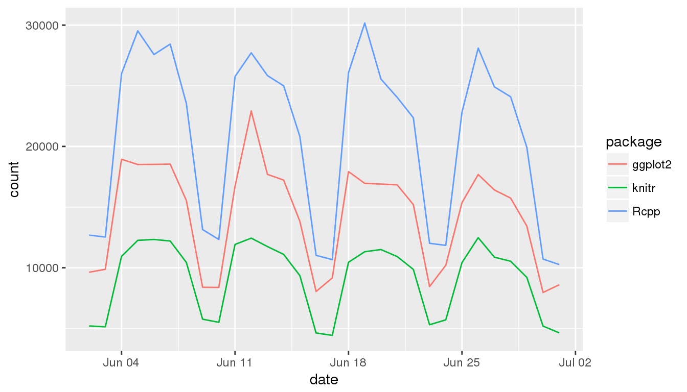
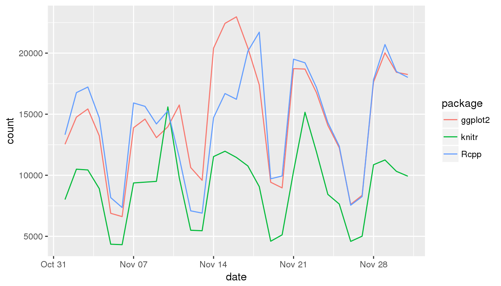

Chapter 3 Example: R package download trends
This chapter explores R package download trends using the cranlogs package.
3.1 Get the code.
Write the code files to your workspace.
The new packages folder now includes a file structure of a serious drake project, plus an interactive-tutorial.R to narrate the example. The code is also online here.
3.2 Overview
This small data analysis project explores some trends in R package downloads over time. The datasets are downloaded using the cranlogs package.
library(cranlogs)
cran_downloads(packages = "dplyr", when = "last-week")
## date count package
## 1 2018-06-12 18702 dplyr
## 2 2018-06-13 17494 dplyr
## 3 2018-06-14 17273 dplyr
## 4 2018-06-15 14177 dplyr
## 5 2018-06-16 7187 dplyr
## 6 2018-06-17 6975 dplyr
## 7 2018-06-18 15952 dplyrAbove, each count is the number of times dplyr was downloaded from the RStudio CRAN mirror on the given day. To stay up to date with the latest download statistics, we need to refresh the data frequently. With drake, we can bring all our work up to date without restarting everything from scratch.
3.3 Analysis
First, we load the required packages. Drake knows about the packages you install and load.
We want to explore the daily downloads from these packages.
We plan to use the cranlogs package.
The data frames older and recent will
contain the number of daily downloads for each package
from the RStudio CRAN mirror.
data_plan <- drake_plan(
older = cran_downloads(
packages = package_list,
from = "2016-11-01",
to = "2016-12-01"
),
recent = target(
command = cran_downloads(
packages = package_list,
when = "last-month"
),
trigger = "always"
),
strings_in_dots = "literals"
)
data_plan
## # A tibble: 2 x 3
## target command trigger
## <chr> <chr> <chr>
## 1 older "cran_downloads(packages = package_list, from = \"2016-1… any
## 2 recent "cran_downloads(packages = package_list, when = \"last-m… alwaysOur data_plan data frame has a "trigger" column because the latest download data needs to be refreshed every day. We use
triggers to force recent to always build. For more on triggers, see the chapter on debugging and testing. Instead of triggers, we could have just made recent a global variable like package_list instead of a formal target in data_plan.
We want to summarize each set of download statistics a couple different ways.
output_types <- drake_plan(
averages = make_my_table(dataset__),
plot = make_my_plot(dataset__)
)
output_types
## # A tibble: 2 x 2
## target command
## <chr> <chr>
## 1 averages make_my_table(dataset__)
## 2 plot make_my_plot(dataset__)We need to define functions to summarize and plot the data.
make_my_table <- function(downloads){
group_by(downloads, package) %>%
summarize(mean_downloads = mean(count))
}
make_my_plot <- function(downloads){
ggplot(downloads) +
geom_line(aes(x = date, y = count, group = package, color = package))
}Below, the targets recent and older
each take turns substituting the dataset__ wildcard.
Thus, output_plan has four rows.
output_plan <- plan_analyses(
plan = output_types,
datasets = data_plan
)
output_plan
## # A tibble: 4 x 2
## target command
## <chr> <chr>
## 1 averages_older make_my_table(older)
## 2 averages_recent make_my_table(recent)
## 3 plot_older make_my_plot(older)
## 4 plot_recent make_my_plot(recent)We plan to weave the results together in a dynamic knitr report.
report_plan <- drake_plan(
knit(knitr_in("report.Rmd"), file_out("report.md"), quiet = TRUE)
)
report_plan
## # A tibble: 1 x 2
## target command
## <chr> <chr>
## 1 "\"report.md\"" "knit(knitr_in(\"report.Rmd\"), file_out(\"report.md\")…Because of the mention of knitr_in() above, make() will look dependencies inside report.Rmd (targets mentioned with loadd() or readd() in active code chunks). That way, whenever a dependency changes, drake will rebuild report.md when you call make(). For that to happen, we need report.Rmd to exist before the call to make(). For this example, you can find report.Rmd here.
Now, we complete the workflow plan data frame by
concatenating the results together.
Drake analyzes the plan to figure out the dependency network,
so row order does not matter.
whole_plan <- bind_plans(
data_plan,
output_plan,
report_plan
)
whole_plan
## # A tibble: 7 x 3
## target command trigger
## <chr> <chr> <chr>
## 1 older "cran_downloads(packages = package_list, from =… any
## 2 recent "cran_downloads(packages = package_list, when =… always
## 3 averages_older make_my_table(older) any
## 4 averages_recent make_my_table(recent) any
## 5 plot_older make_my_plot(older) any
## 6 plot_recent make_my_plot(recent) any
## 7 "\"report.md\"" "knit(knitr_in(\"report.Rmd\"), file_out(\"repo… anyNow, we run the project to download the data and analyze it.
The results will be summarized in the knitted report, report.md,
but you can also read the results directly from the cache.
make(whole_plan)
## target older
## target recent: trigger "always"
## target averages_older
## target plot_older
## target averages_recent
## target plot_recent
## target file "report.md"
## Used non-default triggers. Some targets may not be up to date.
readd(averages_recent)
## # A tibble: 3 x 2
## package mean_downloads
## <chr> <dbl>
## 1 ggplot2 14923
## 2 knitr 9318.
## 3 Rcpp 22593.
readd(averages_older)
## # A tibble: 3 x 2
## package mean_downloads
## <chr> <dbl>
## 1 ggplot2 14641.
## 2 knitr 9069.
## 3 Rcpp 14408.
readd(plot_recent)

Because we used triggers, each make() rebuilds the recent
target to get the latest download numbers for today.
If the newly-downloaded data are the same as last time
and nothing else changes,
drake skips all the other targets.
make(whole_plan)
## target recent: trigger "always"
## Used non-default triggers. Some targets may not be up to date.To visualize the build behavior, plot the dependency network.
Target recent and everything depending on it is always
out of date because of the "always" trigger.
If you rerun the project tomorrow,
the recent dataset will have shifted one day forward,
so make() will refresh averages_recent, plot_recent, and
report.md. Targets averages_older and plot_older
should be unaffected, so drake will skip them.
3.4 What remote data sources in general?
When you rely on data from the internet, you should trigger a new download when the data change remotely. The best practices guide explains how to automatically refresh the data when the online timestamp changes.